Empire Stone × Empire Granite — QA
Test Cases: E2E Flow — Mode 3 (Cut-to-Order)
เรื่องราวเดียวต่อเนื่องกันตั้งแต่มี Block พร้อมอยู่แล้วในสต็อก ยืนยันคำสั่งขายทั้งที่ยังไม่มีแผ่นหินจริง จนถึงฝ่ายผลิตตัดแผ่นจริงและออกใบแจ้งหนี้ ไม่ใช่การเทสฟีเจอร์แยกส่วน และไม่มีข้อไหนเป็นการดักฟิลด์บังคับ/error ทั่วไป (ยกเว้นข้อ Confirm MO ก่อนย้าย Block และข้อ Scan Verification ซึ่งเป็น gate จริงของกระบวนการ) — เดินตามได้เองแม้ไม่ใช่ technical user เขียนใหม่ทั้งชุด 14 ก.ย. 2026 รอบกลไกตัดหินใหม่ (Manufacturing Order ตรง แทนที่ Factory Worklist/Cut-to-Order wizard เดิมที่ถูกถอดออกเมื่อวาน) ตัวเลข "ตัวอย่างจริง" มาจากการรันจริงรอบนี้บน mbx-ee-dev ไม่ใช่ตัวเลขสมมติ
13Test Case ทั้งหมด
4หมวด
11High Priority
2Medium Priority
0Low Priority
E1. ขาย (Sale — ก่อนมีแผ่นจริง)
ADR-018 — ขายได้ทันทีแม้ยังไม่มีแผ่น ราคาจะคำนวณจริงหลังตัดเสร็จ · 2 test cases
| TC ID | Scenario | Precondition | Steps | ข้อมูลตัวอย่าง | Expected Result | Priority | ภาพหน้าจอ |
|---|---|---|---|---|---|---|---|
| TC-E2E-M3-01 | เพิ่มบรรทัดสินค้า Material ที่ยังไม่มีแผ่นจริงในสต็อก | มี Block พร้อมอยู่แล้วในสต็อก (ยังไม่ตัด) จาก Material ที่ตั้ง Pricing Mode = Serial (per-slab) |
|
ลูกค้า = "ทดสอบ E2E - Test Customer" สินค้า = E2E Mode3 Fresh Test - Slab |
เพิ่มบรรทัดสำเร็จ ราคาต่อหน่วยขึ้นเป็นราคาตั้งต้นของสินค้า (list price) เนื่องจากยังไม่มีแผ่นจริงผูกกับบรรทัดนี้เลย (ตัวอย่างจริง: 4,500/หน่วย) | Medium | 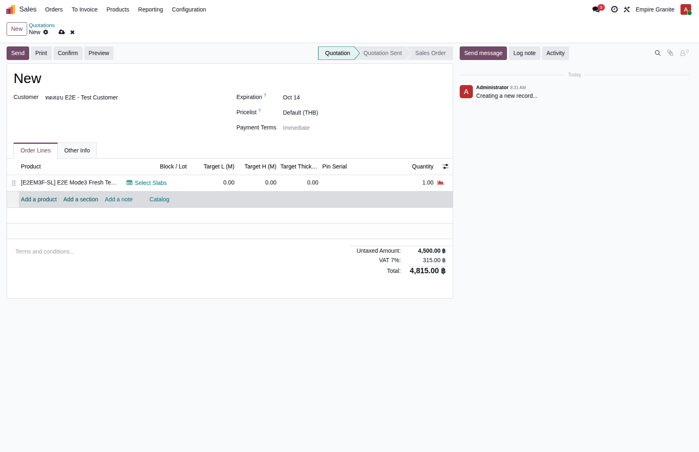 |
| TC-E2E-M3-02 | ยืนยัน (Confirm) Sale Order ทั้งที่ยังไม่มีแผ่นจริง | ทำ TC-E2E-M3-01 เสร็จแล้ว |
|
- | SO เปลี่ยนสถานะเป็น Sales Order ยอดรวมคำนวณจากราคาตั้งต้นของสินค้า (ตัวอย่างจริง: S00125, 4,500 + VAT 7% = 4,815.00 บาท) — ราคานี้ยังไม่ใช่ราคาจริง จะคำนวณใหม่อัตโนมัติหลังตัดเสร็จ (ดู TC-E2E-M3-07) มี Delivery Order เกิดขึ้นอัตโนมัติ 1 ใบ แต่ยังส่งไม่ได้เพราะยังไม่มีของจริง | High | 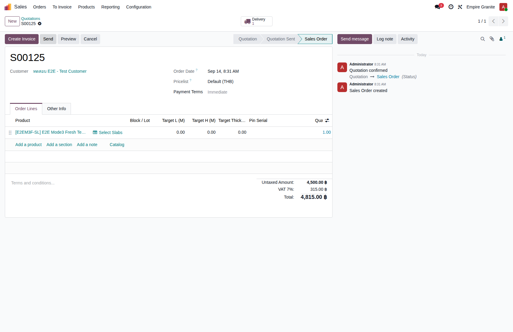 |
E2. ผลิต (Production — ตัด Slab จริง)
กลไกใหม่ 13 ก.ย. 2026 — สร้าง Manufacturing Order ตรงในแอป Manufacturing ไม่ต้องผ่าน wizard แล้ว · 5 test cases
| TC ID | Scenario | Precondition | Steps | ข้อมูลตัวอย่าง | Expected Result | Priority | ภาพหน้าจอ |
|---|---|---|---|---|---|---|---|
| TC-E2E-M3-03 | สร้าง Manufacturing Order ผูกกับ Block และ SO line โดยตรง ✨ กลไกใหม่ (เปลี่ยน 13 ก.ย. 2026): ไม่มี "Factory Worklist"/"Cut to Order" wizard แล้ว — Admin สร้าง Manufacturing Order ตรงในแอป Manufacturing ได้เลย เลือก Block ที่ช่อง "Stone Block" ระบบจะเติม Product/Bill of Material ให้อัตโนมัติ |
ทำ TC-E2E-M3-02 เสร็จแล้ว มี Block พร้อมอยู่แล้วในสต็อก (ยังไม่ตัด) |
|
Stone Block = BLK-26-0028 Target Slab L (M) = 1.2 Target Slab H (M) = 0.8 For Sale Order Line = S00125 |
สร้าง Manufacturing Order สำเร็จ ระบบเติม Product และ Bill of Material ให้อัตโนมัติจาก Block ที่เลือก (ตัวอย่างจริง: EG01/STCUT/00042) | High | 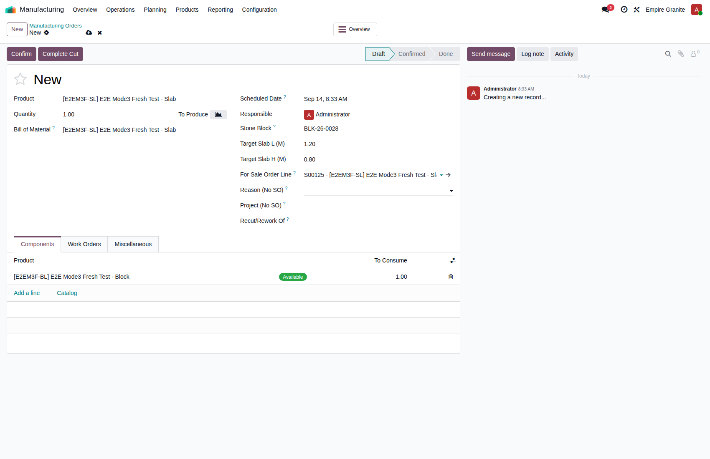 |
| TC-E2E-M3-04 | พยายาม Confirm Manufacturing Order โดย Block ยังไม่ได้ย้ายไปสถานีตัด | ทำ TC-E2E-M3-03 เสร็จแล้ว |
|
- | ระบบฟ้อง error สองภาษาทันที ระบุปริมาณที่ต้องการเทียบกับที่มีอยู่จริงที่สถานีตัด บันทึกไม่ผ่าน — ตัวอย่างจริง: "Block BLK-26-0028 ยังไม่ได้ย้ายไปสถานีตัด (Stone Production) เพียงพอ — ต้องการ 0.019 m³ แต่อยู่ที่สถานีตัดแล้วแค่ 0.000 m³" | High | 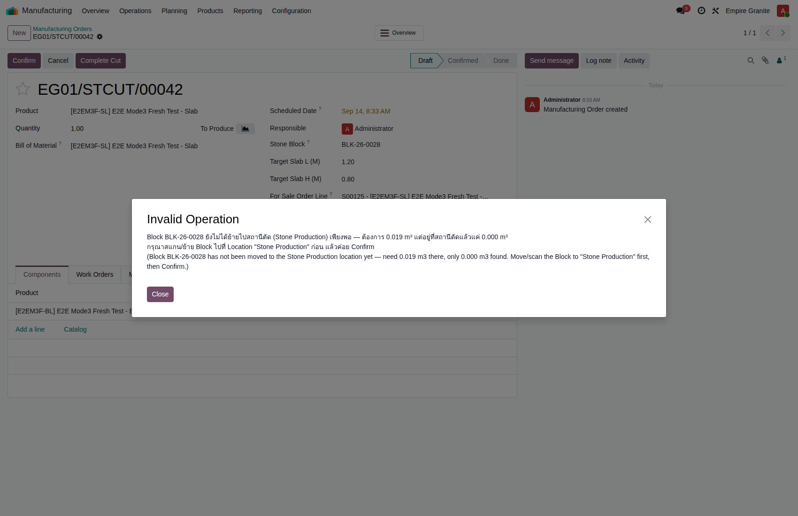 |
| TC-E2E-M3-05 | ย้าย Block ไปสถานีตัด (Internal Transfer) | ทำ TC-E2E-M3-04 เสร็จแล้ว (เจอ error มาก่อน) |
|
สินค้า = E2E Mode3 Fresh Test - Block จำนวน = 0.02 m³ |
ใบย้ายสถานะเปลี่ยนเป็น Done สำเร็จ — ตัวอย่างจริง: EG01/INT/00058 — Block ก้อนนั้นย้ายไปอยู่ที่ Location "Stone Production" ครบตามจำนวนที่ย้าย | High | 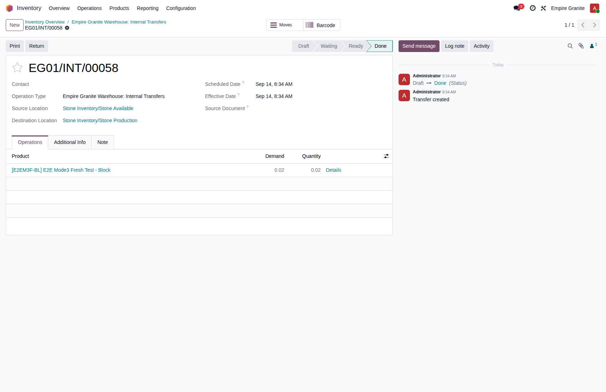 |
| TC-E2E-M3-06 | กลับไป Confirm Manufacturing Order อีกครั้ง | ทำ TC-E2E-M3-05 เสร็จแล้ว |
|
- | ยืนยันสำเร็จ ไม่มี error แล้ว เพราะ Block ถูกย้ายมาสถานีตัดครบตามจำนวนแล้ว — สถานะเปลี่ยนเป็น Confirmed ปุ่ม "Complete Cut" ปรากฏพร้อมกดขั้นถัดไป | High | 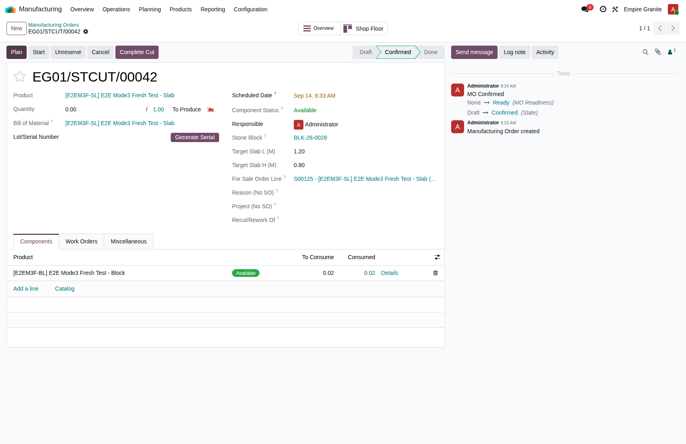 |
| TC-E2E-M3-07 | กด "Complete Cut" — ได้แผ่นจริง ราคา SO คำนวณใหม่อัตโนมัติ | ทำ TC-E2E-M3-06 เสร็จแล้ว |
|
- | Manufacturing Order เสร็จสมบูรณ์ (สถานะ Done) เกิดแผ่นหินใหม่ 1 แผ่นตามขนาดที่ตัดจริง (Lot/Serial ใหม่) ผูกกับบรรทัด SO เดิมให้อัตโนมัติ ราคาต่อหน่วยของบรรทัด SO เปลี่ยนจากราคาตั้งต้นเป็นราคาจริงตามขนาดที่ตัดได้ทันที — ตัวอย่างจริง: แผ่น BLK-26-0028-1 (1.2×0.8 ม. = 0.96 ตร.ม.) ยอดรวม SO เปลี่ยนจาก 4,815.00 เป็น 4,622.40 (รวม VAT) ทันที เห็นการเปลี่ยนแปลงบันทึกไว้ใน chatter log ของ SO | High | 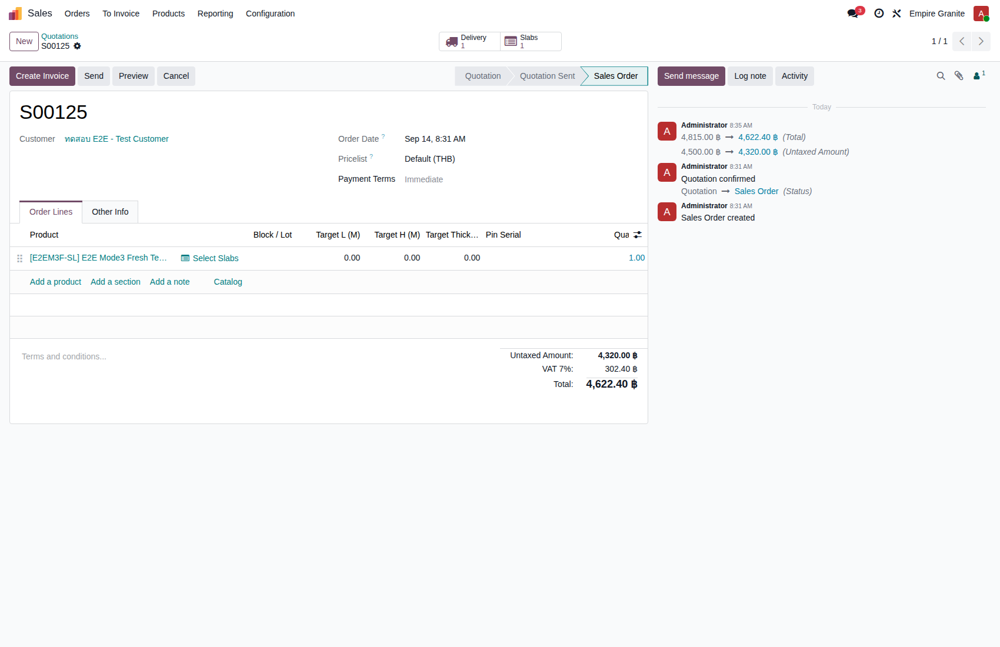 |
E3. จัดส่ง (Delivery — Scan Verification)
ADR-009 — ต้องสแกน/กรอก Serial ให้ตรงก่อน Validate เสมอ ยังใช้ตรรกะเดิม ไม่เปลี่ยนตามกลไกตัดใหม่ · 2 test cases
| TC ID | Scenario | Precondition | Steps | ข้อมูลตัวอย่าง | Expected Result | Priority | ภาพหน้าจอ |
|---|---|---|---|---|---|---|---|
| TC-E2E-M3-08 | พยายาม Validate ใบส่งของโดยยังไม่กรอก Scanned Serial ให้ตรง | ทำ TC-E2E-M3-07 เสร็จแล้ว มีใบส่งของสถานะ Ready รออยู่ |
|
- | ระบบฟ้อง error สองภาษาทันที: "สแกน Serial ไม่ตรง กรุณาสแกนให้ครบก่อน Validate: BLK-26-0028-1" บันทึกไม่ผ่าน | High | 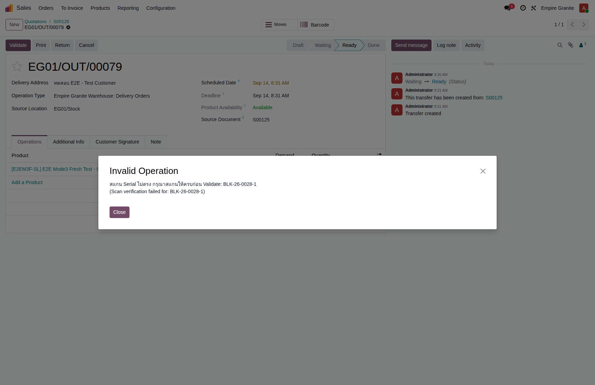 |
| TC-E2E-M3-09 | กรอก/สแกน Scanned Serial ให้ตรงแล้ว Validate | ทำ TC-E2E-M3-08 เสร็จแล้ว (เจอ error มาก่อน) |
|
Scanned Serial = BLK-26-0028-1 | ใบส่งของเปลี่ยนสถานะเป็น Done สำเร็จ — แผ่นที่ขายหายจากสต็อกที่ขายได้ (Available) แล้ว — ตัวอย่างจริง: EG01/OUT/00079 | High | 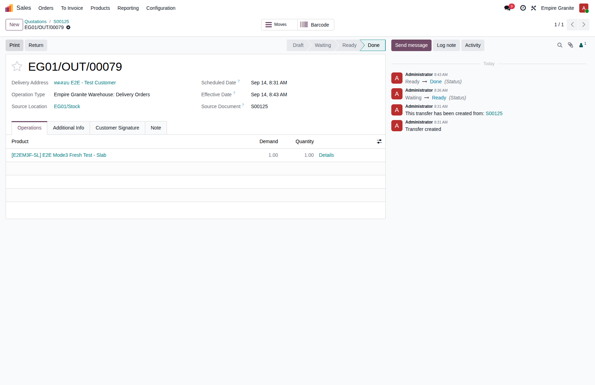 |
E4. บัญชี (Accounting + Payment)
ออกใบแจ้งหนี้ + รับชำระเงิน + ตรวจรายการบัญชี · 4 test cases
| TC ID | Scenario | Precondition | Steps | ข้อมูลตัวอย่าง | Expected Result | Priority | ภาพหน้าจอ |
|---|---|---|---|---|---|---|---|
| TC-E2E-M3-10 | สร้างและยืนยันใบแจ้งหนี้ลูกค้า (Customer Invoice) | ทำ TC-E2E-M3-09 เสร็จแล้ว |
|
- | ใบแจ้งหนี้สถานะ Posted ยอดรวมตรงกับ SO หลังคำนวณราคาใหม่แล้ว (ตัวอย่างจริง: INV/2026/00027, 4,622.40) | High | 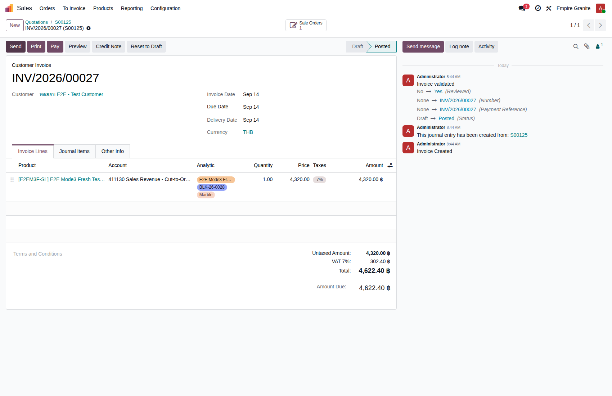 |
| TC-E2E-M3-11 | รับชำระเงิน (Register Payment) บนใบแจ้งหนี้ | ทำ TC-E2E-M3-10 เสร็จแล้ว (Invoice = Posted) |
|
- | ใบแจ้งหนี้ขึ้นสถานะ "In Payment" — ตัวอย่างจริง: INV/2026/00027 จบที่สถานะ Posted + In Payment | Medium | 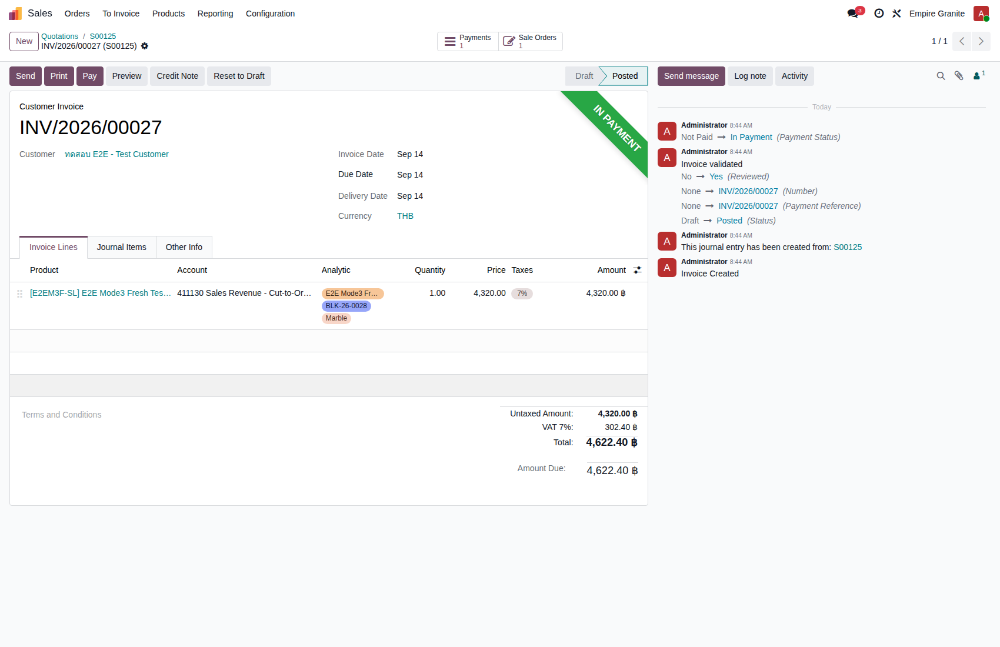 |
| TC-E2E-M3-12 | ตรวจรายการบัญชีบนใบแจ้งหนี้ (รายได้ + COGS + VAT + ลูกหนี้) | ทำ TC-E2E-M3-10 เสร็จแล้ว |
|
- | เห็น 5 บรรทัดบนใบแจ้งหนี้ใบเดียว: เครดิต "411130 Sales Revenue - Cut-to-Order (Mode 3)" (บัญชีเฉพาะของ Mode 3 ไม่ใช่บัญชีทั่วไป), เดบิต "113110 Inventory" (ตัดออก), เดบิต "511110 COGS - Stone Sales (all modes)", เครดิต Output VAT, เดบิต Trade Receivables — ตัวอย่างจริง INV/2026/00027: รายได้ 4,320.00 / COGS-Inventory คู่ละ 300.00 / VAT 302.40 / ลูกหนี้ 4,622.40 (ยอดรวมสมดุล 4,922.40 = 4,922.40) พร้อม Analytic Distribution ครบ 3 มิติ | High | 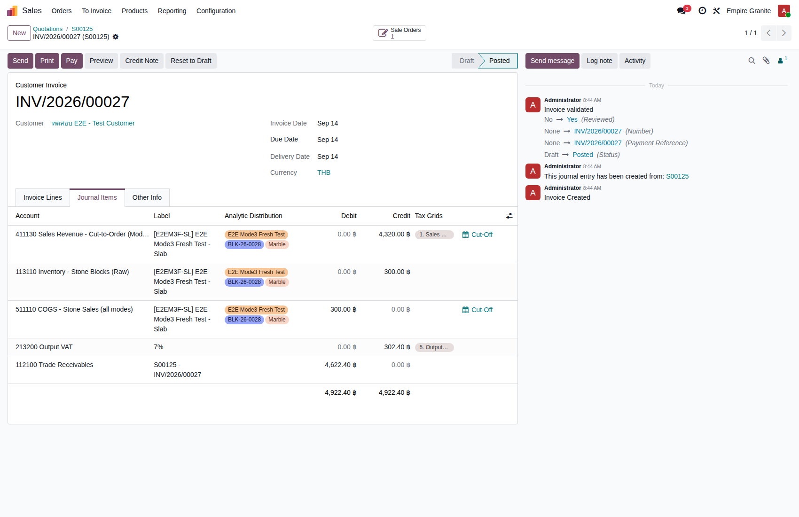 |
| TC-E2E-M3-13 | ตรวจว่าไม่มี Journal Entry ซ้ำจากใบส่งของ (ไม่มี COGS ซ้ำ) | ทำ TC-E2E-M3-09 เสร็จแล้ว (Delivery = Done) |
|
- | ไม่พบ Journal Entry แยกต่างหากสำหรับใบส่งของนี้เลย (มีเฉพาะ entry ของขั้นตอนตัด/ผลิตซึ่งเป็นคนละเรื่องกัน) — COGS มีบันทึกอยู่ที่เดียวคือในใบแจ้งหนี้ (INV/2026/00027) ไม่มีการนับซ้ำ ยืนยันแล้วว่ากลไกตัดใหม่ (13 ก.ย. 2026) ไม่กระทบพฤติกรรมนี้ | High |